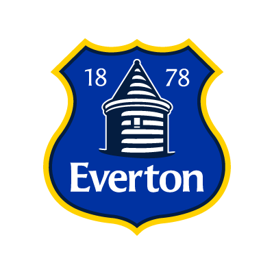
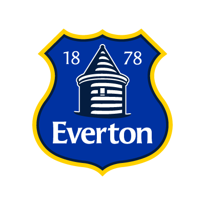
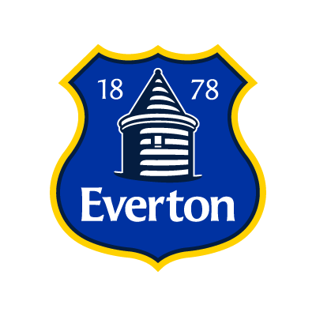

Liverpool
Vs
Everton

- The largest unbeaten run in all matches is 14, which is held by Everton.
- The largest unbeaten game run at home is Liverpool, who unbeaten in 17 at home, this record is still ongoing to this day since the 2000-2001 season.
- The longest unbeaten run away from home is held by Everton, with a 16 match run at Anfield between 1899 and 1920.
- This fixture has seen 21 red cards in the Premier League, which is the highest tally for any other fixture.
- The record home victory is held by Liverpool, who beat Everton 6-0 at Anfield in the 1935-36 season.
- The record for the biggest away run is held by both clubs, who both got a 5-0 win at each others ground.
- The highest scoring match between the 2 clubs was when Liverpool won a match 7-4 at Anfield.
| Teams/Trophies | Liverpool | Everton |
|---|---|---|
| First Division | 18 | 9 |
| Second Division | 4 | 1 |
| FA Cup | 7 | 5 |
| League Cup | 8 | 0 |
| FA Community Shield | 15 | 9 |
| Football League Super Cup | 1 | 0 |
| Champions League | 5 | 0 |
| Europa League | 3 | 0 |
| European Super Cup | 3 | 0 |
| Total | 64 | 24 |
| Date | Stadium | Score |
|---|---|---|
| 20th April 2016 | Anfield | 4-0 |
| 4th October 2015 | Goodison Park | 1-1 |
| 7th February 2015 | Goodison Park | 0-0 |
| 27th September 2014 | Anfield | 1-1 |
| 28th January 2014 | Anfield | 4-0 |
| 23rd November 2013 | Goodison Park | 3-3 |
| 5th May 2013 | Anfield | 0-0 |
| 28th October 2012 | Goodison Park | 2-2 |
| 14th April 2012 | Wembley | 2-1 |
| 13th March 2012 | Anfield | 3-0 |
| 1st October 2011 | Goodison Park | 0-2 |
| 16th January 2011 | Anfield | 2-2 |
| 17th October 2010 | Goodison Park | 2-0 |
| 6th February 2010 | Anfield | 1-0 |
| 29th November 2009 | Goodison Park | 0-2 |
| 4th February 2009 | Goodison Park | 1-0 |
| Competition | Played | LFC | Draw | EFC |
|---|---|---|---|---|
| Football League Division 1 | 146 | 54 | 44 | 48 |
| Premier League | 48 | 20 | 19 | 9 |
| FA Cup | 23 | 10 | 6 | 7 |
| League Cup | 4 | 2 | 1 | 1 |
| FA Community Shield | 3 | 1 | 1 | 1 |
| Football League Super Cup | 2 | 2 | 0 | 0 |
| Total | 226 | 89 | 71 | 66 |